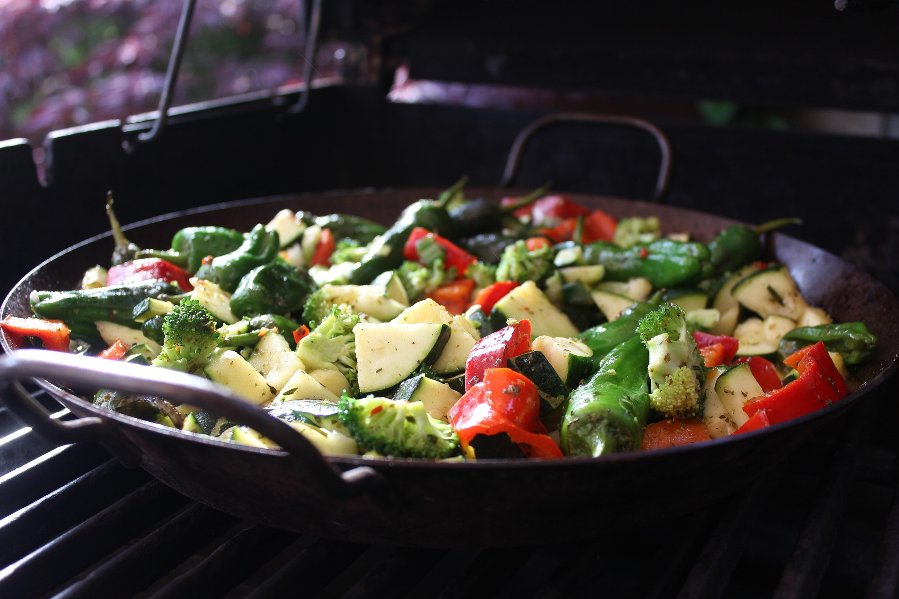

Paprika-Reispfanne
 ca. 45 min
ca. 45 min
 normal
normal
 24.07.2025
24.07.2025
Zutaten für
| 3 | Zwiebeln |
| 3 | Zehe(n) Knoblauch |
| 1,5 | Chilischote(n) |
| 4,5 | EL Tomatenmark |
| 4,5 | Paprikaschote(n) |
| 450g | Joghurt |
| 1,5 TL | Paprikapulver, edelsüß |
| 1,5 TL | Paprikapulver, rosenscharf |
| 1,5 | Handvoll Basilikum, frisch |
| 3 | Tasse(n) Basmatireis |
Zubereitung
ca. 25 min
Gesamtzeit ca. 45 min
Die Zwiebeln fein würfeln und in einer Pfanne in etwas Öl glasig dünsten. Den gepressten Knoblauch, die Chilischote und das Tomatenmark hinzugeben und kurz mit anschwitzen.
Die Paprikawürfel in die Pfanne geben und ein paar Minuten lang anbraten, dabei ab und zu die Pfanne schwenken.
Den Joghurt hinzufügen, verrühren und alles mit Paprikapulver, Salz und Pfeffer würzen.
Zu guter Letzt den Reis hinzugeben, untermengen und heiß werden lassen. Danach die Kräuter hacken und untermischen.
Rezept erstellt von

Morris